Install Python modules
To run this vignette you need to install all the necessary Python modules.
This can be done manually, see https://rubd.github.io/Giotto_site/articles/installation_issues.html#python-manual-installation
This can be done within R using our installation tools (installGiottoEnvironment), see https://rubd.github.io/Giotto_site/articles/tut0_giotto_environment.html for more information.
(optional) set giotto instructions
# to automatically save figures in save_dir set save_plot to TRUE
temp_dir = '~/Temp/'
myinstructions = createGiottoInstructions(save_dir = temp_dir,
save_plot = TRUE,
show_plot = FALSE)1. Create a Giotto object
minimum requirements:
- matrix with expression information (or path to)
- x,y(,z) coordinates for cells or spots (or path to)
# giotto object
expr_path = system.file("extdata", "starmap_expr.txt.gz", package = 'Giotto')
loc_path = system.file("extdata", "starmap_cell_loc.txt", package = 'Giotto')
starmap_mini <- createGiottoObject(raw_exprs = expr_path,
spatial_locs = loc_path,
instructions = myinstructions)How to work with Giotto instructions that are part of your Giotto object:
- show the instructions associated with your Giotto object with showGiottoInstructions
- change one or more instructions with changeGiottoInstructions
- replace all instructions at once with replaceGiottoInstructions
- read or get a specific giotto instruction with readGiottoInstructions
Of note, the python path can only be set once in an R session. See the reticulate package for more information.
# show instructions associated with giotto object (starmap_mini)
showGiottoInstructions(starmap_mini)2. processing steps
- filter genes and cells based on detection frequencies
- normalize expression matrix (log transformation, scaling factor and/or z-scores)
- add cell and gene statistics (optional)
- adjust expression matrix for technical covariates or batches (optional). These results will be stored in the custom slot.
filterDistributions(starmap_mini, detection = 'genes',
save_param = list(save_name = '2_a_filtergenes'))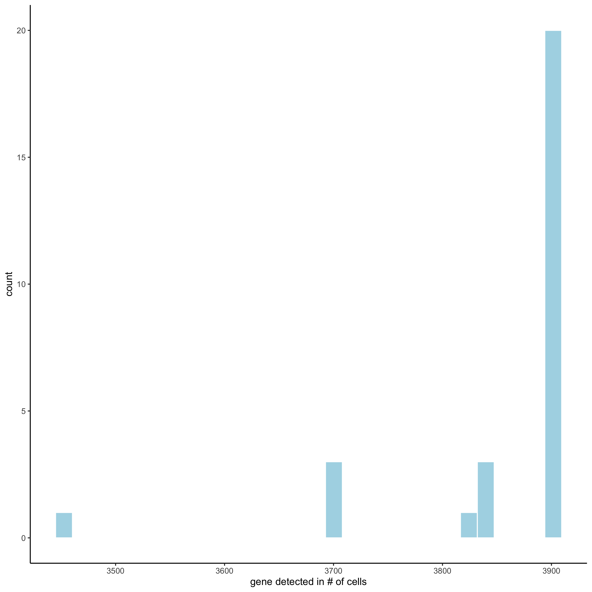
filterDistributions(starmap_mini, detection = 'cells',
save_param = list(save_name = '2_b_filtercells'))
filterCombinations(starmap_mini,
expression_thresholds = c(1),
gene_det_in_min_cells = c(50, 100, 200),
min_det_genes_per_cell = c(20, 28, 28),
save_param = list(save_name = '2_c_filtercombos'))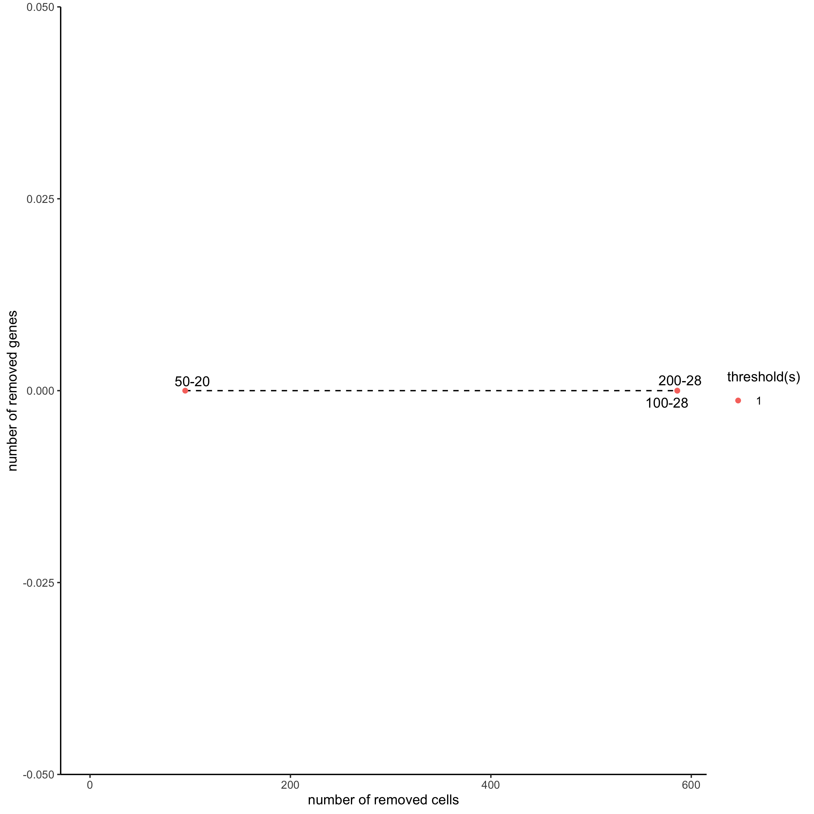
starmap_mini <- filterGiotto(gobject = starmap_mini,
expression_threshold = 1,
gene_det_in_min_cells = 50,
min_det_genes_per_cell = 20,
expression_values = c('raw'),
verbose = T)
starmap_mini <- normalizeGiotto(gobject = starmap_mini,
scalefactor = 6000, verbose = T)
starmap_mini <- addStatistics(gobject = starmap_mini)3. dimension reduction
- identify highly variable genes (HVG) will not be performed here, because there are only few genes
- perform PCA
- identify number of significant prinicipal components (PCs)
- run UMAP and/or TSNE on PCs (or directly on matrix)
starmap_mini <- runPCA(gobject = starmap_mini, method = 'factominer')
screePlot(starmap_mini, ncp = 30,
save_param = list(save_name = '3_a_screeplot'))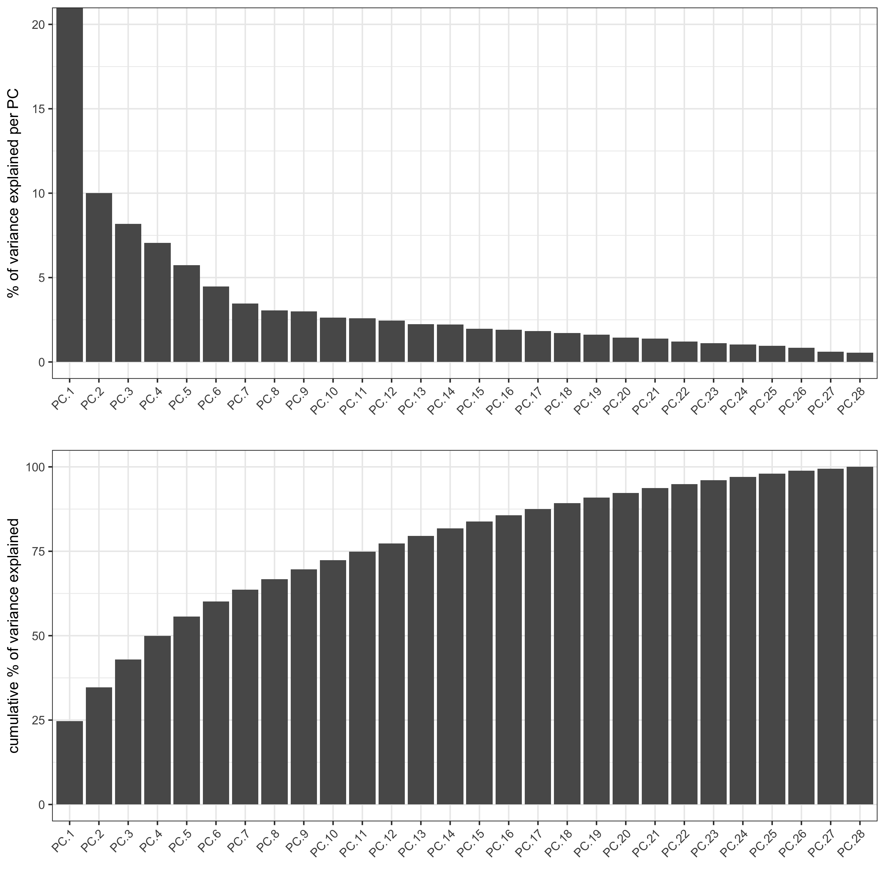
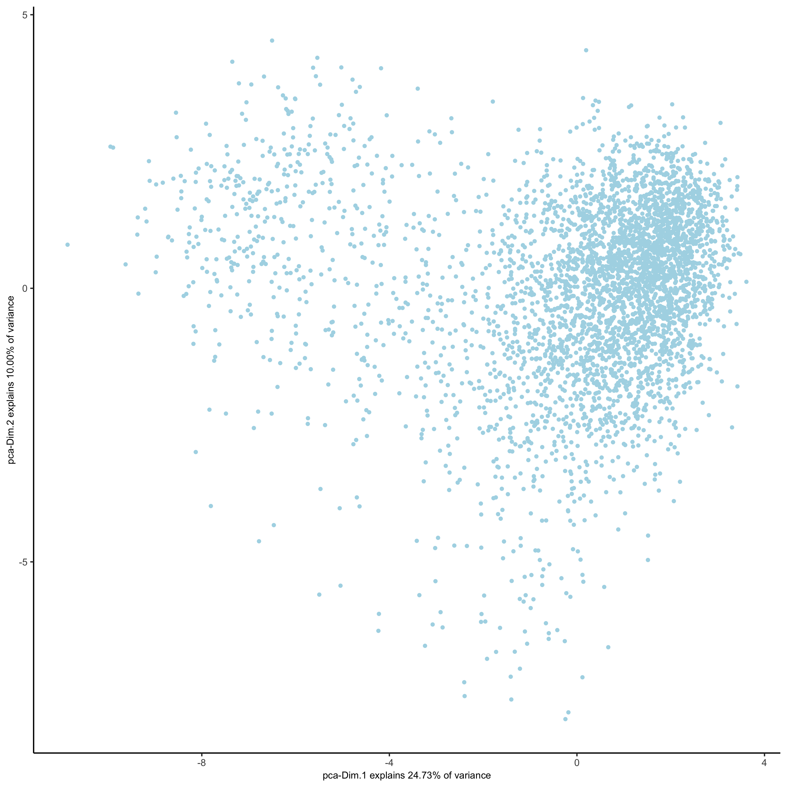
# 2D umap
starmap_mini <- runUMAP(starmap_mini, dimensions_to_use = 1:8)
plotUMAP(gobject = starmap_mini,
save_param = list(save_name = '3_c_UMAP'))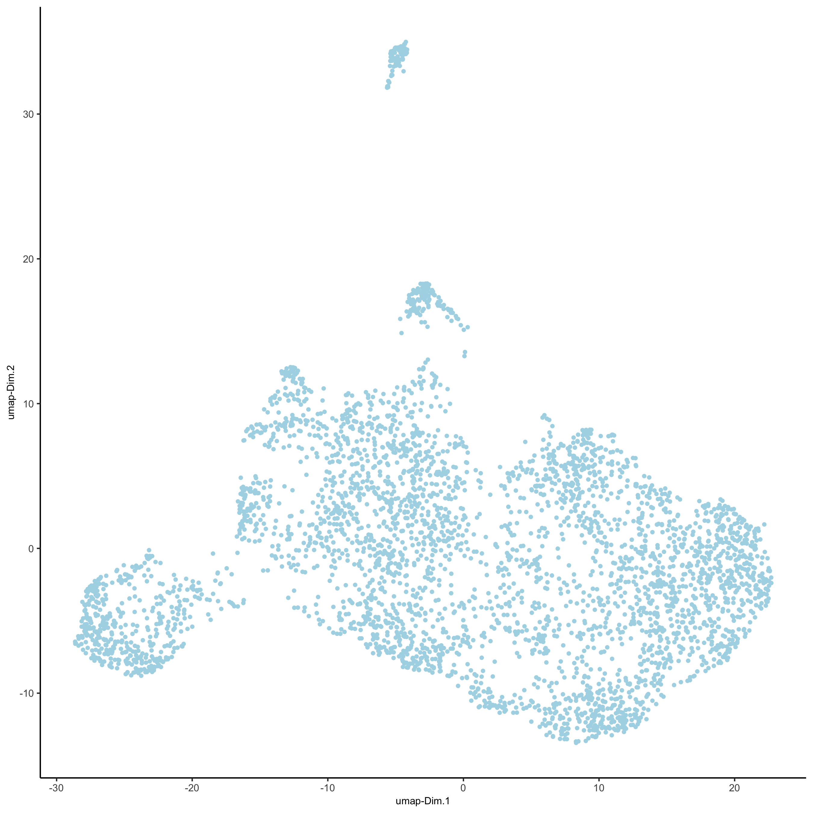
# 3D umap
starmap_mini <- runUMAP(starmap_mini, dimensions_to_use = 1:8, name = '3D_umap', n_components = 3)
plotUMAP_3D(gobject = starmap_mini, dim_reduction_name = '3D_umap',
save_param = list(save_name = '3_d_UMAP_3D'))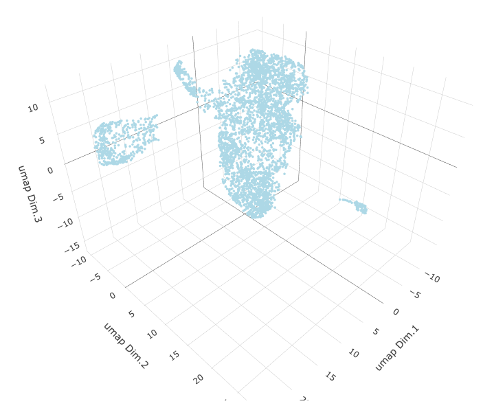
# 2D tsne
starmap_mini <- runtSNE(starmap_mini, dimensions_to_use = 1:8)
plotTSNE(gobject = starmap_mini,
save_param = list(save_name = '3_e_TSNE'))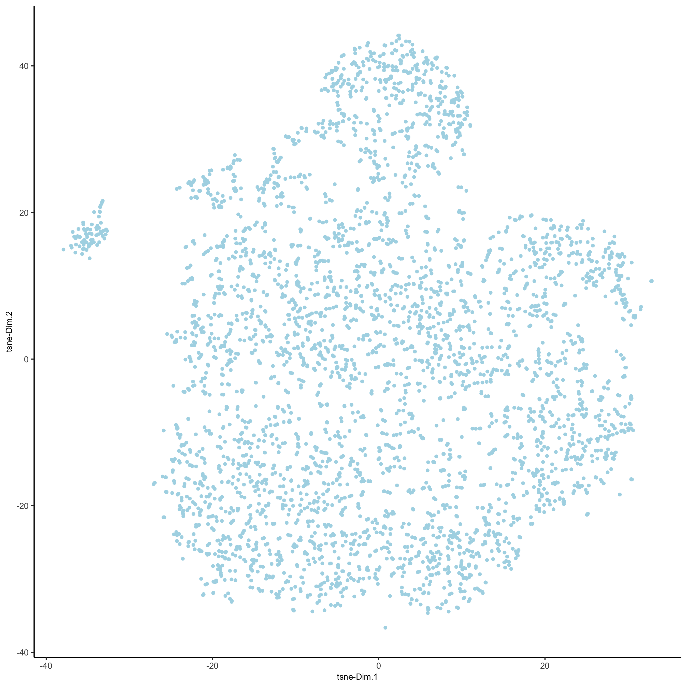
4. clustering
- create a shared (default) nearest network in PCA space (or directly on matrix)
- cluster on nearest network with Leiden or Louvan (kmeans and hclust are alternatives)
starmap_mini <- createNearestNetwork(gobject = starmap_mini, dimensions_to_use = 1:8, k = 25)
starmap_mini <- doLeidenCluster(gobject = starmap_mini, resolution = 0.5, n_iterations = 1000)
# 2D umap
plotUMAP(gobject = starmap_mini,
cell_color = 'leiden_clus', show_NN_network = T, point_size = 2.5,
save_param = list(save_name = '4_a_UMAP'))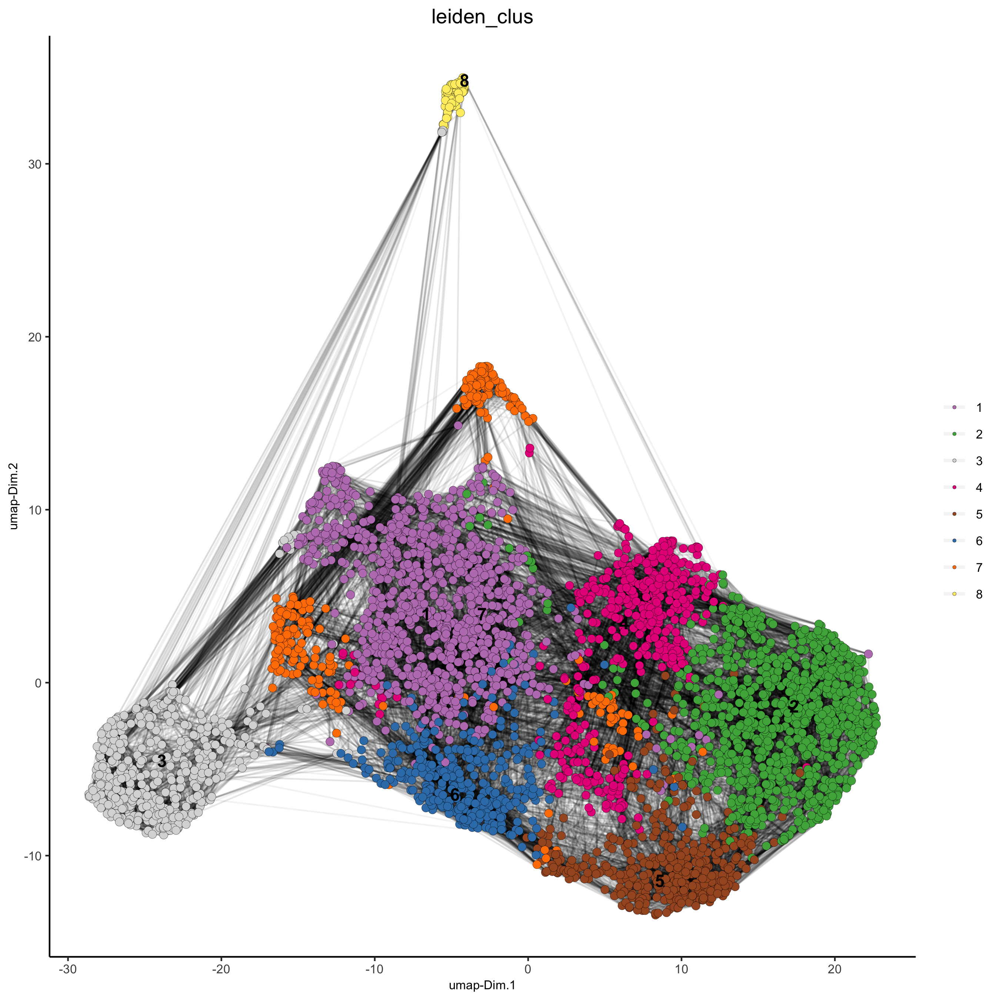
# 3D umap
plotUMAP_3D(gobject = starmap_mini, dim_reduction_name = '3D_umap',
cell_color = 'leiden_clus',
save_param = list(save_name = '4_b_UMAP_3D'))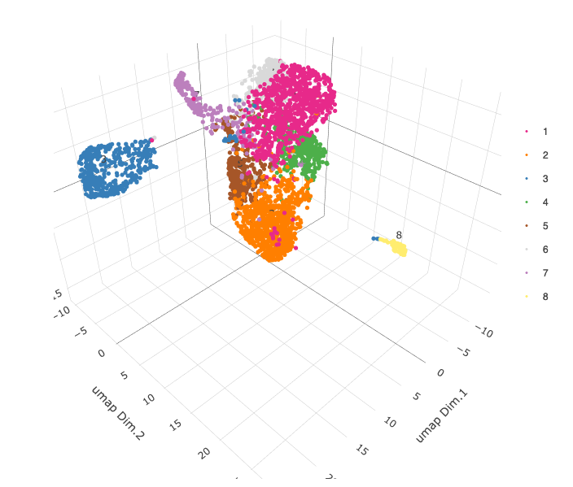
# 2D umap + coordinates
spatDimPlot(gobject = starmap_mini, cell_color = 'leiden_clus',
dim_point_size = 2, spat_point_size = 2.5,
save_param = list(save_name = '4_c_spatdimplot'))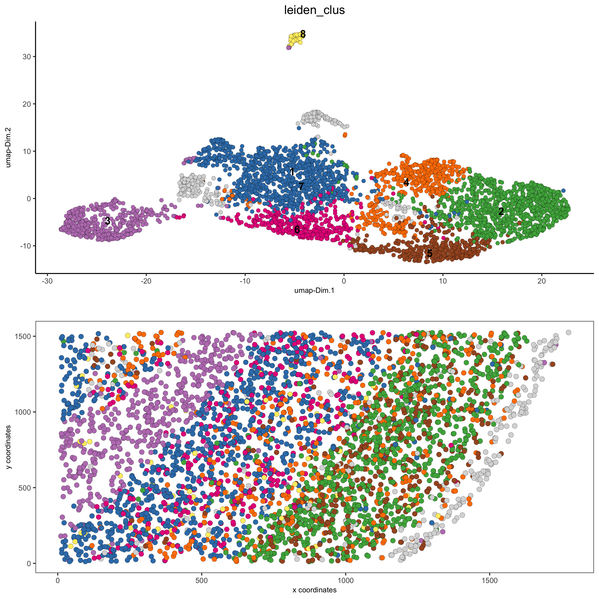
# 3D umap + coordinates
spatDimPlot3D(gobject = starmap_mini,
cell_color = 'leiden_clus', dim_reduction_name = '3D_umap',
save_param = list(save_name = '4_d_spatdimplot3D'))
# heatmap and dendrogram
showClusterHeatmap(gobject = starmap_mini, cluster_column = 'leiden_clus',
save_param = list(save_name = '4_e_clusterheatmap'))
showClusterDendrogram(starmap_mini, h = 0.5, rotate = T,
cluster_column = 'leiden_clus',
save_param = list(save_name = '4_f_clusterdendrogram'))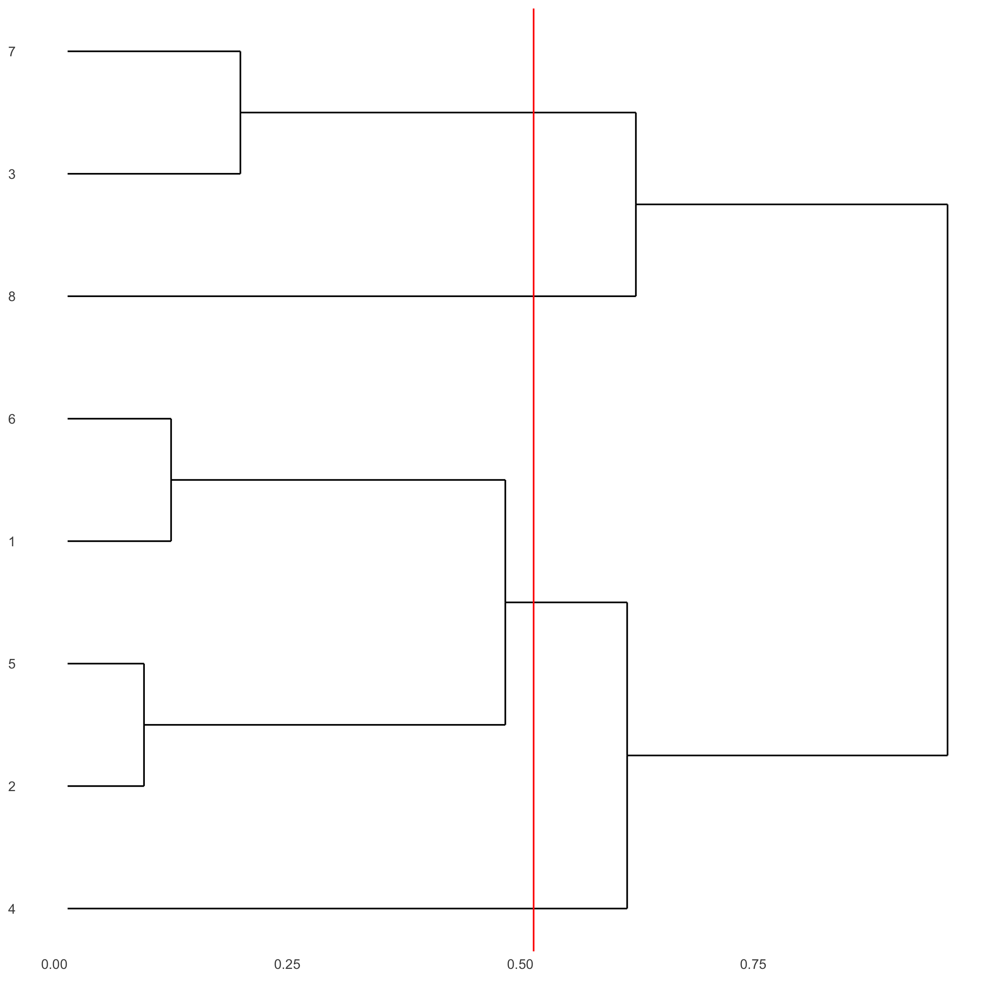
5. differential expression
gini_markers = findMarkers_one_vs_all(gobject = starmap_mini,
method = 'gini',
expression_values = 'normalized',
cluster_column = 'leiden_clus',
min_genes = 20,
min_expr_gini_score = 0.5,
min_det_gini_score = 0.5)
# get top 2 genes per cluster and visualize with violinplot
topgenes_gini = gini_markers[, head(.SD, 2), by = 'cluster']
violinPlot(starmap_mini, genes = topgenes_gini$genes,
cluster_column = 'leiden_clus',
save_param = list(save_name = '5_a_violinplot'))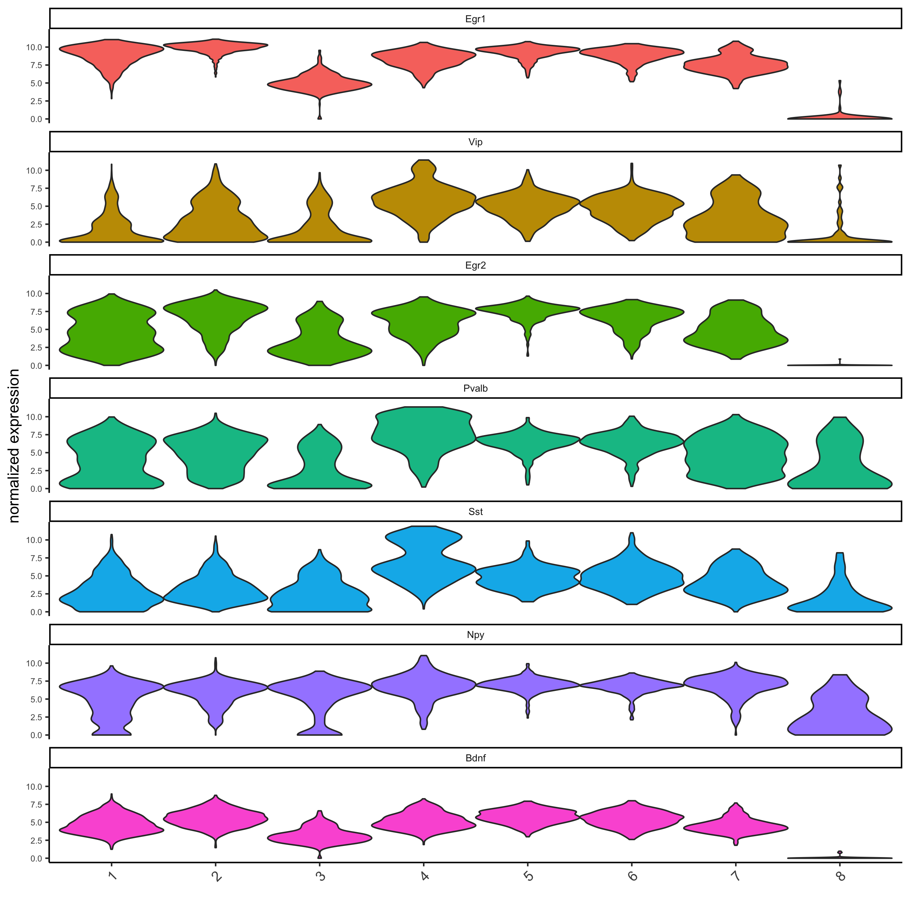
# get top 6 genes per cluster and visualize with heatmap
topgenes_gini2 = gini_markers[, head(.SD, 6), by = 'cluster']
plotMetaDataHeatmap(starmap_mini, selected_genes = topgenes_gini2$genes,
metadata_cols = c('leiden_clus'),
save_param = list(save_name = '5_b_metaheatmap'))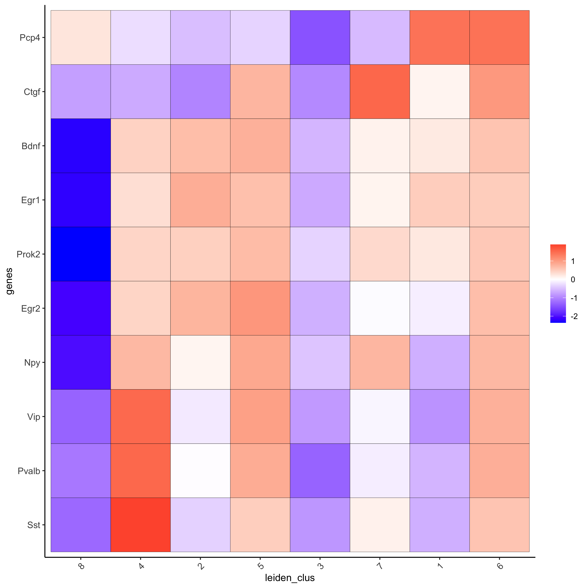
6. A. cell type annotation
clusters_cell_types = c('cell A', 'cell B', 'cell C', 'cell D',
'cell E', 'cell F', 'cell G', 'cell H')
names(clusters_cell_types) = 1:8
starmap_mini = annotateGiotto(gobject = starmap_mini,
annotation_vector = clusters_cell_types,
cluster_column = 'leiden_clus',
name = 'cell_types')
# check new cell metadata
pDataDT(starmap_mini)
# visualize annotations
spatDimPlot(gobject = starmap_mini, cell_color = 'cell_types',
spat_point_size = 2, dim_point_size = 2,
save_param = list(save_name = '6_a_spatdimplot'))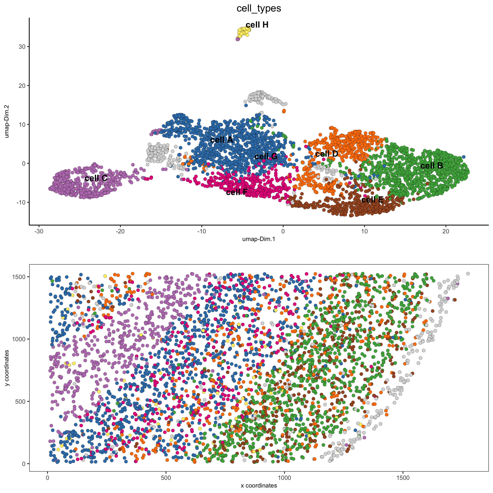
6. B. cell type gene expression
dimGenePlot3D(starmap_mini,
dim_reduction_name = '3D_umap',
expression_values = 'scaled',
genes = "Pcp4",
genes_high_color = 'red', genes_mid_color = 'white', genes_low_color = 'darkblue',
save_param = list(save_name = '6_b_dimgeneplot'))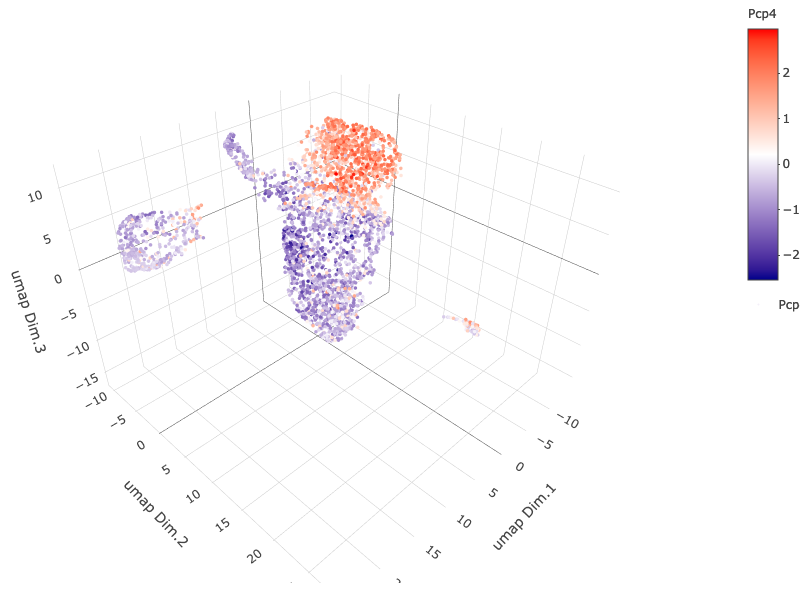
spatGenePlot3D(starmap_mini,
expression_values = 'scaled',
genes = "Pcp4",
show_other_cells = F,
genes_high_color = 'red', genes_mid_color = 'white', genes_low_color = 'darkblue',
save_param = list(save_name = '6_c_spatgeneplot'))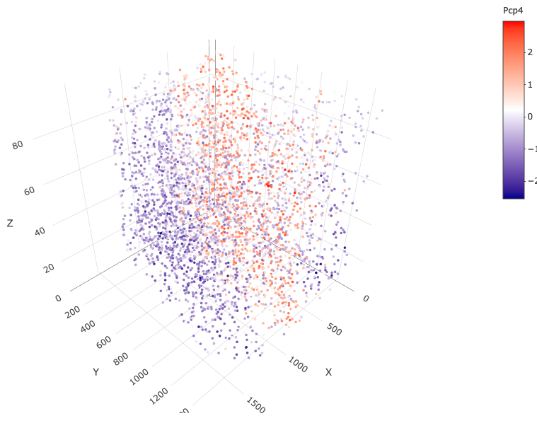
7. spatial grid
Create a grid based on defined stepsizes in the x,y(,z) axes.
starmap_mini <- createSpatialGrid(gobject = starmap_mini,
sdimx_stepsize = 200,
sdimy_stepsize = 200,
sdimz_stepsize = 20,
minimum_padding = 10)
showGrids(starmap_mini)
# visualize grid
spatPlot2D(gobject = starmap_mini, show_grid = T, point_size = 1.5,
save_param = list(save_name = '7_a_spatplot'))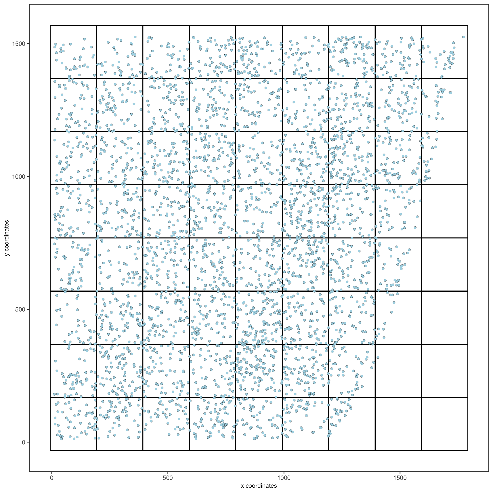
8. spatial network
Only the method = delaunayn_geometry can make 3D Delaunay networks. This requires the package geometry to be installed.
- visualize information about the default Delaunay network
- create a spatial Delaunay network (default)
- create a spatial kNN network
plotStatDelaunayNetwork(gobject = starmap_mini, maximum_distance = 200,
method = 'delaunayn_geometry',
save_param = list(save_name = '8_aa_delnetwork'))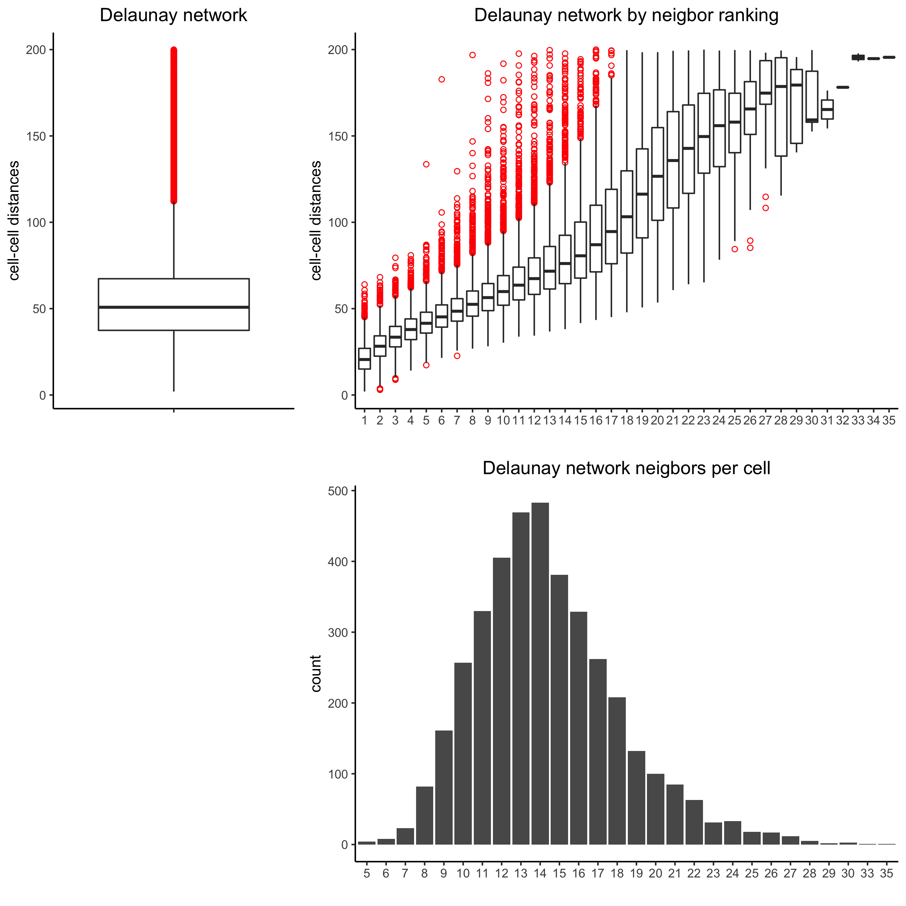
starmap_mini = createSpatialNetwork(gobject = starmap_mini, minimum_k = 2,
maximum_distance_delaunay = 200,
method = 'Delaunay',
delaunay_method = 'delaunayn_geometry')
starmap_mini = createSpatialNetwork(gobject = starmap_mini, minimum_k = 2,
method = 'kNN', k = 10)
showNetworks(starmap_mini)
# visualize the two different spatial networks
spatPlot(gobject = starmap_mini, show_network = T,
network_color = 'blue', spatial_network_name = 'Delaunay_network',
point_size = 2.5, cell_color = 'leiden_clus',
save_param = list(save_name = '8_a_spatplot'))
spatPlot(gobject = starmap_mini, show_network = T,
network_color = 'blue', spatial_network_name = 'kNN_network',
point_size = 2.5, cell_color = 'leiden_clus',
save_param = list(save_name = '8_b_spatplot'))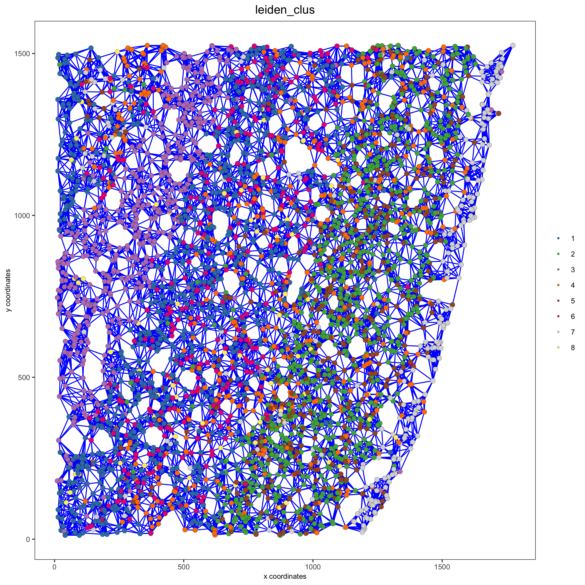
9. spatial genes
Identify spatial genes with 3 different methods:
- binSpect with kmeans binarization (default)
- binSpect with rank binarization
- silhouetteRank
Visualize top 4 genes per method.
km_spatialgenes = binSpect(starmap_mini)
spatGenePlot(starmap_mini, expression_values = 'scaled',
genes = km_spatialgenes[1:4]$genes,
point_shape = 'border', point_border_stroke = 0.1,
show_network = F, network_color = 'lightgrey', point_size = 2.5,
cow_n_col = 2,
save_param = list(save_name = '9_a_spatgeneplot'))
rank_spatialgenes = binSpect(starmap_mini, bin_method = 'rank')
spatGenePlot(starmap_mini, expression_values = 'scaled',
genes = rank_spatialgenes[1:4]$genes,
point_shape = 'border', point_border_stroke = 0.1,
show_network = F, network_color = 'lightgrey', point_size = 2.5,
cow_n_col = 2,
save_param = list(save_name = '9_b_spatgeneplot'))
silh_spatialgenes = silhouetteRank(gobject = starmap_mini) # TODO: suppress print output
spatGenePlot(starmap_mini, expression_values = 'scaled',
genes = silh_spatialgenes[1:4]$genes,
point_shape = 'border', point_border_stroke = 0.1,
show_network = F, network_color = 'lightgrey', point_size = 2.5,
cow_n_col = 2,
save_param = list(save_name = '9_c_spatgeneplot'))10. spatial co-expression patterns
Identify robust spatial co-expression patterns using the spatial network or grid and a subset of individual spatial genes.
1. calculate spatial correlation scores
2. cluster correlation scores
# 1. calculate spatial correlation scores
ext_spatial_genes = km_spatialgenes[1:20]$genes
spat_cor_netw_DT = detectSpatialCorGenes(starmap_mini,
method = 'network',
spatial_network_name = 'Delaunay_network',
subset_genes = ext_spatial_genes)
# 2. cluster correlation scores
spat_cor_netw_DT = clusterSpatialCorGenes(spat_cor_netw_DT,
name = 'spat_netw_clus', k = 6)
heatmSpatialCorGenes(starmap_mini, spatCorObject = spat_cor_netw_DT,
use_clus_name = 'spat_netw_clus',
save_param = list(save_name = '10_a_heatmspatcor', units = 'in'))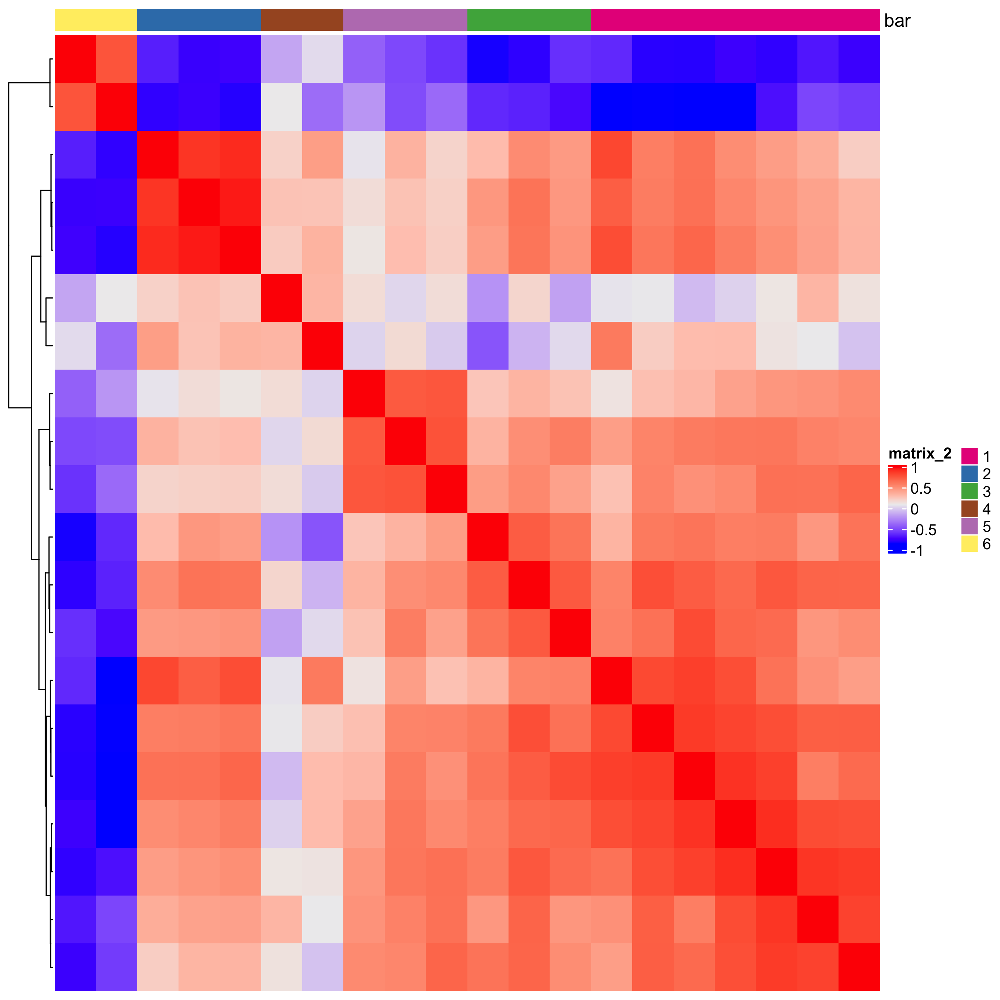
netw_ranks = rankSpatialCorGroups(starmap_mini,
spatCorObject = spat_cor_netw_DT,
use_clus_name = 'spat_netw_clus',
save_param = list(save_name = '10_b_rankcorgroup'))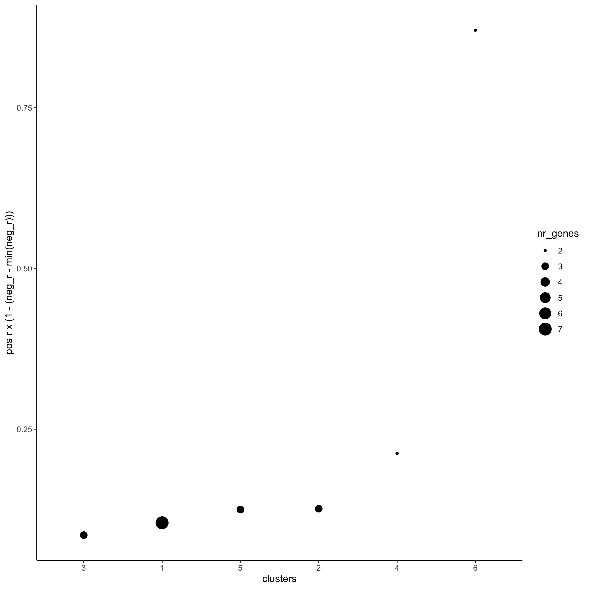
top_netw_spat_cluster = showSpatialCorGenes(spat_cor_netw_DT,
use_clus_name = 'spat_netw_clus',
selected_clusters = 6,
show_top_genes = 1)
cluster_genes_DT = showSpatialCorGenes(spat_cor_netw_DT,
use_clus_name = 'spat_netw_clus',
show_top_genes = 1)
cluster_genes = cluster_genes_DT$clus; names(cluster_genes) = cluster_genes_DT$gene_ID
starmap_mini = createMetagenes(starmap_mini,
gene_clusters = cluster_genes,
name = 'cluster_metagene')
spatCellPlot(starmap_mini,
spat_enr_names = 'cluster_metagene',
cell_annotation_values = netw_ranks$clusters,
point_size = 1.5, cow_n_col = 3,
save_param = list(save_name = '10_c_spatcellplot'))
11. spatial HMRF domains
hmrf_folder = paste0(temp_dir,'/','11_HMRF/')
if(!file.exists(hmrf_folder)) dir.create(hmrf_folder, recursive = T)
# perform hmrf
my_spatial_genes = km_spatialgenes[1:20]$genes
HMRF_spatial_genes = doHMRF(gobject = starmap_mini,
expression_values = 'scaled',
spatial_genes = my_spatial_genes,
spatial_network_name = 'Delaunay_network',
k = 6,
betas = c(10,2,2),
output_folder = paste0(hmrf_folder, '/', 'Spatial_genes/SG_top20_k6_scaled'))
# check and select hmrf
for(i in seq(10, 14, by = 2)) {
viewHMRFresults2D(gobject = starmap_mini,
HMRFoutput = HMRF_spatial_genes,
k = 6, betas_to_view = i,
point_size = 2)
}
starmap_mini = addHMRF(gobject = starmap_mini,
HMRFoutput = HMRF_spatial_genes,
k = 6, betas_to_add = c(12),
hmrf_name = 'HMRF')
# visualize selected hmrf result
giotto_colors = Giotto:::getDistinctColors(6)
names(giotto_colors) = 1:6
spatPlot(gobject = starmap_mini, cell_color = 'HMRF_k6_b.12',
point_size = 3, coord_fix_ratio = 1, cell_color_code = giotto_colors,
save_param = list(save_name = '11_a_spatplot'))12. cell neighborhood: cell-type/cell-type interactions
set.seed(seed = 2841)
cell_proximities = cellProximityEnrichment(gobject = starmap_mini,
cluster_column = 'cell_types',
spatial_network_name = 'Delaunay_network',
adjust_method = 'fdr',
number_of_simulations = 1000)
# barplot
cellProximityBarplot(gobject = starmap_mini,
CPscore = cell_proximities,
min_orig_ints = 2, min_sim_ints = 2, p_val = 0.5,
save_param = list(save_name = '12_a_barplot'))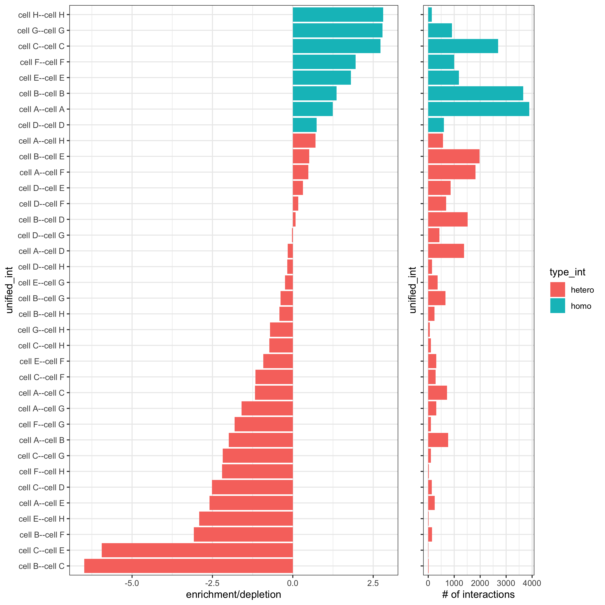
## heatmap
cellProximityHeatmap(gobject = starmap_mini, CPscore = cell_proximities,
order_cell_types = T, scale = T,
color_breaks = c(-1.5, 0, 1.5),
color_names = c('blue', 'white', 'red'),
save_param = list(save_name = '12_b_heatmap', units = 'in'))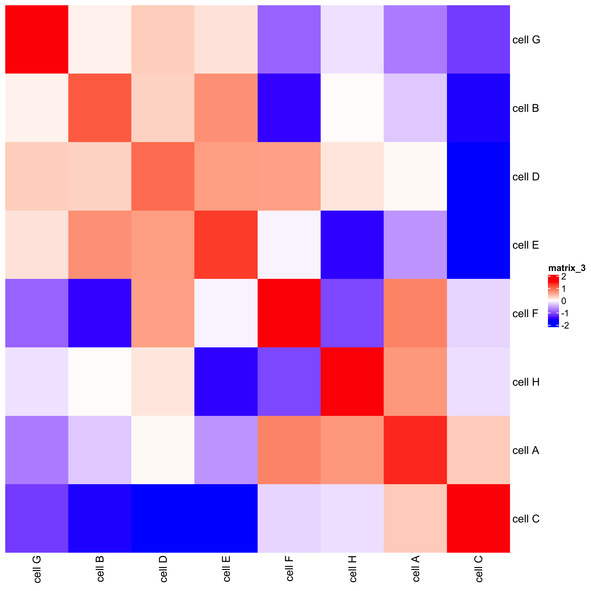
# network
cellProximityNetwork(gobject = starmap_mini, CPscore = cell_proximities,
remove_self_edges = T, only_show_enrichment_edges = T,
save_param = list(save_name = '12_c_network'))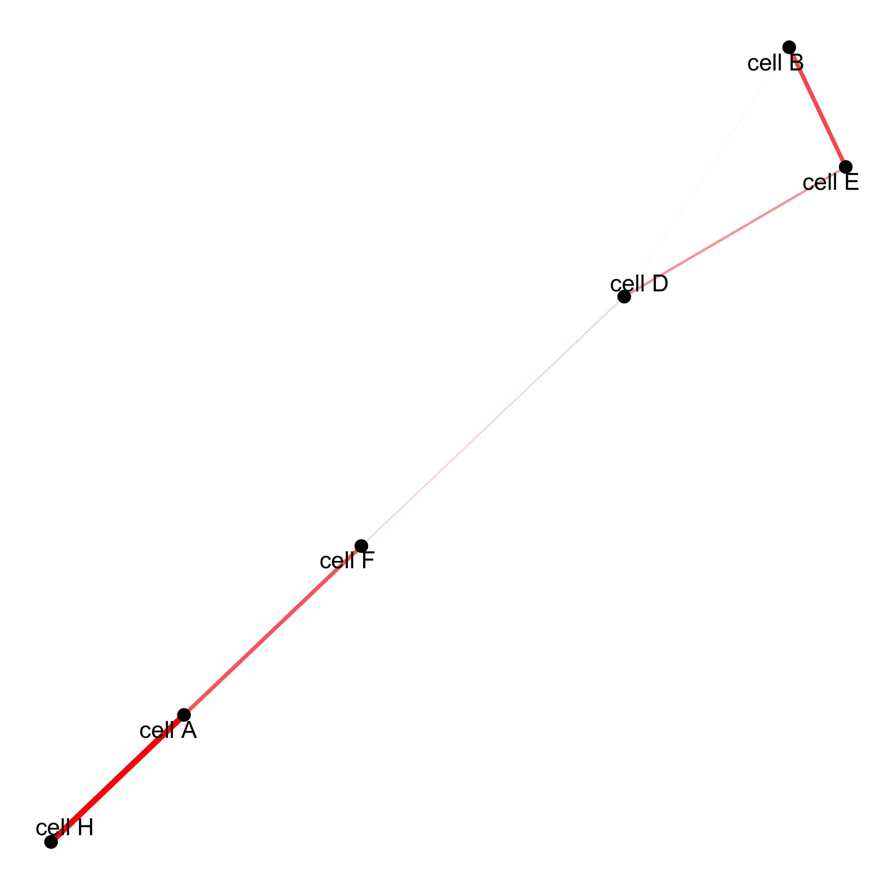
# network with self-edges
cellProximityNetwork(gobject = starmap_mini, CPscore = cell_proximities,
remove_self_edges = F, self_loop_strength = 0.3,
only_show_enrichment_edges = F,
rescale_edge_weights = T,
node_size = 8,
edge_weight_range_depletion = c(1, 2),
edge_weight_range_enrichment = c(2,5),
save_param = list(save_name = '12_d_network'))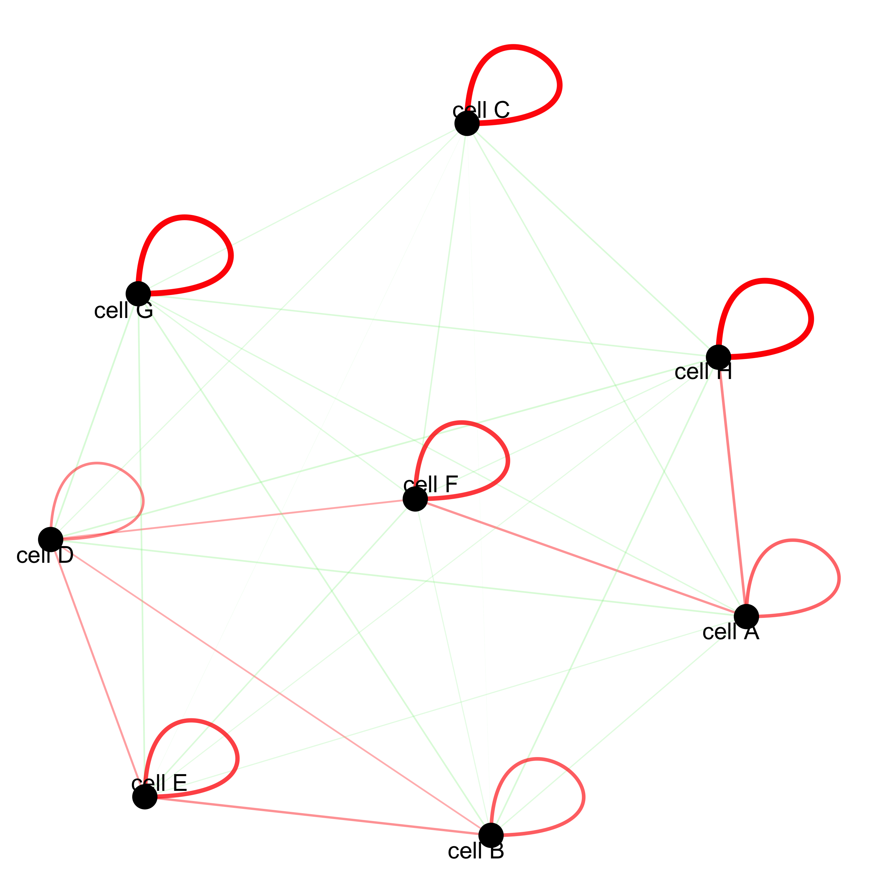
visualization of specific cell types
pDataDT(starmap_mini)
# Option 1
spec_interaction = "cell D--cell H" # needs to be in alphabetic order! first D, then H
cellProximitySpatPlot2D(gobject = starmap_mini,
interaction_name = spec_interaction,
show_network = T,
cluster_column = 'cell_types',
cell_color = 'cell_types',
cell_color_code = c('cell H' = 'lightblue', 'cell D' = 'red'),
point_size_select = 4, point_size_other = 2,
save_param = list(save_name = '12_e_cellproximity'))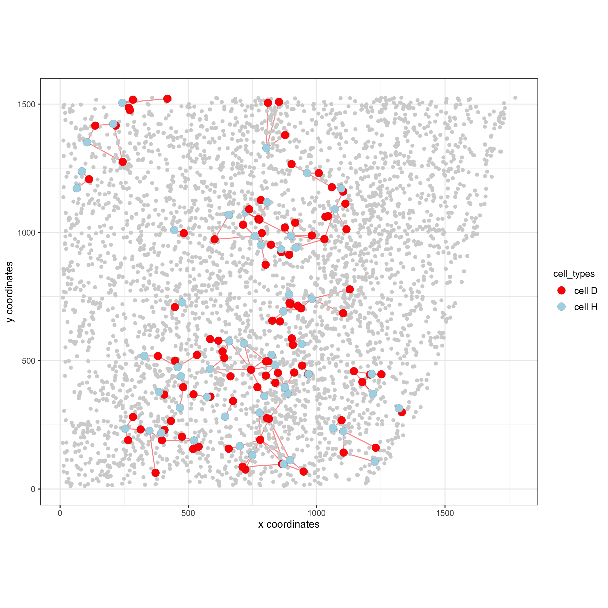
# Option 2: create additional metadata
starmap_mini = addCellIntMetadata(starmap_mini,
spatial_network = 'Delaunay_network',
cluster_column = 'cell_types',
cell_interaction = spec_interaction,
name = 'D_H_interactions')
spatPlot(starmap_mini, cell_color = 'D_H_interactions', legend_symbol_size = 3,
select_cell_groups = c('other_cell D', 'other_cell H', 'select_cell D', 'select_cell H'),
save_param = list(save_name = '12_e_spatplot'))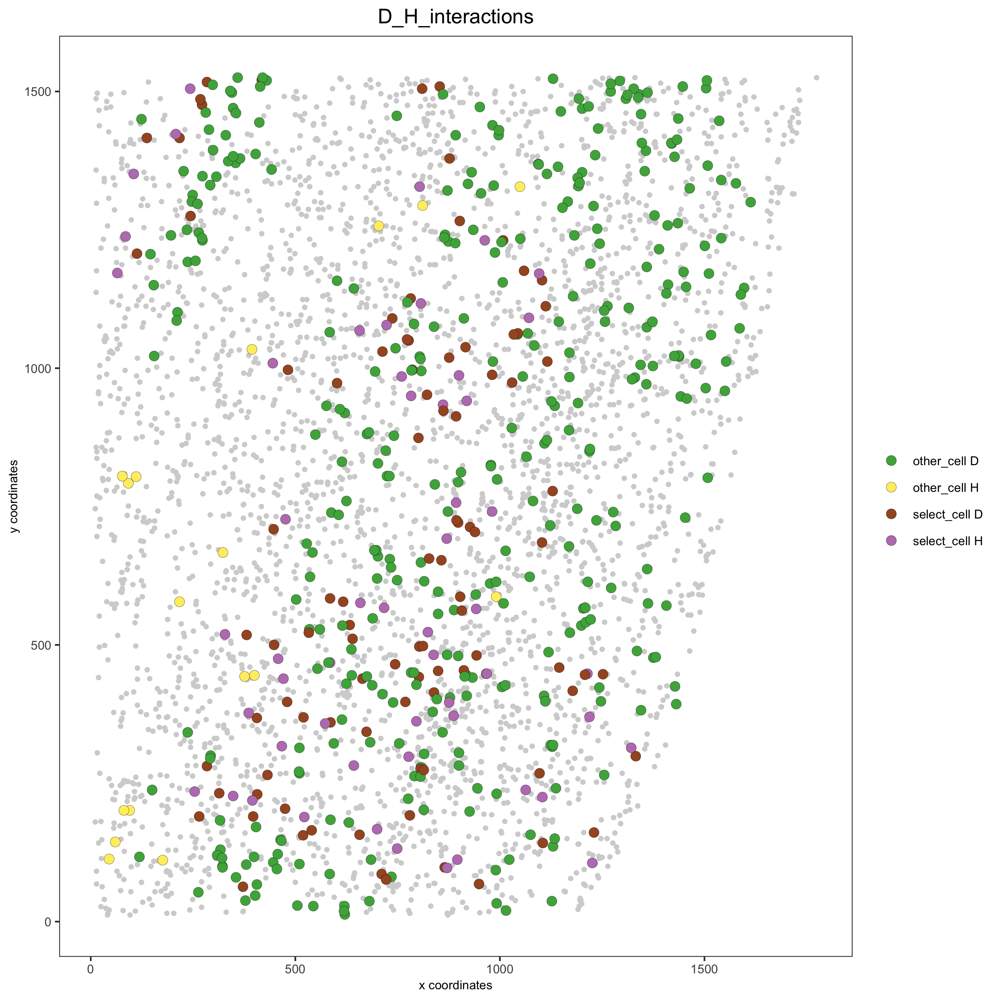
13. 2D cross sections from 3D object
# create cross section
starmap_mini = createCrossSection(starmap_mini,
method="equation",
equation=c(0,1,0,600),
extend_ratio = 0.6)
# show cross section
insertCrossSectionSpatPlot3D(starmap_mini, cell_color = 'leiden_clus',
axis_scale = 'cube',
point_size = 2,
save_param = list(save_name = '13_a_insertcross'))
insertCrossSectionGenePlot3D(starmap_mini, expression_values = 'scaled',
axis_scale = "cube",
genes = "Slc17a7",
save_param = list(save_name = '13_b_insertcrossgene'))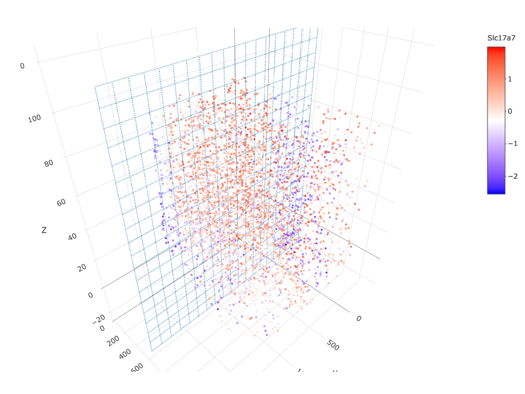
# for cell annotation
crossSectionPlot(starmap_mini,
point_size = 2, point_shape = "border",
cell_color = "leiden_clus",
save_param = list(save_name = '13_c_crossplot'))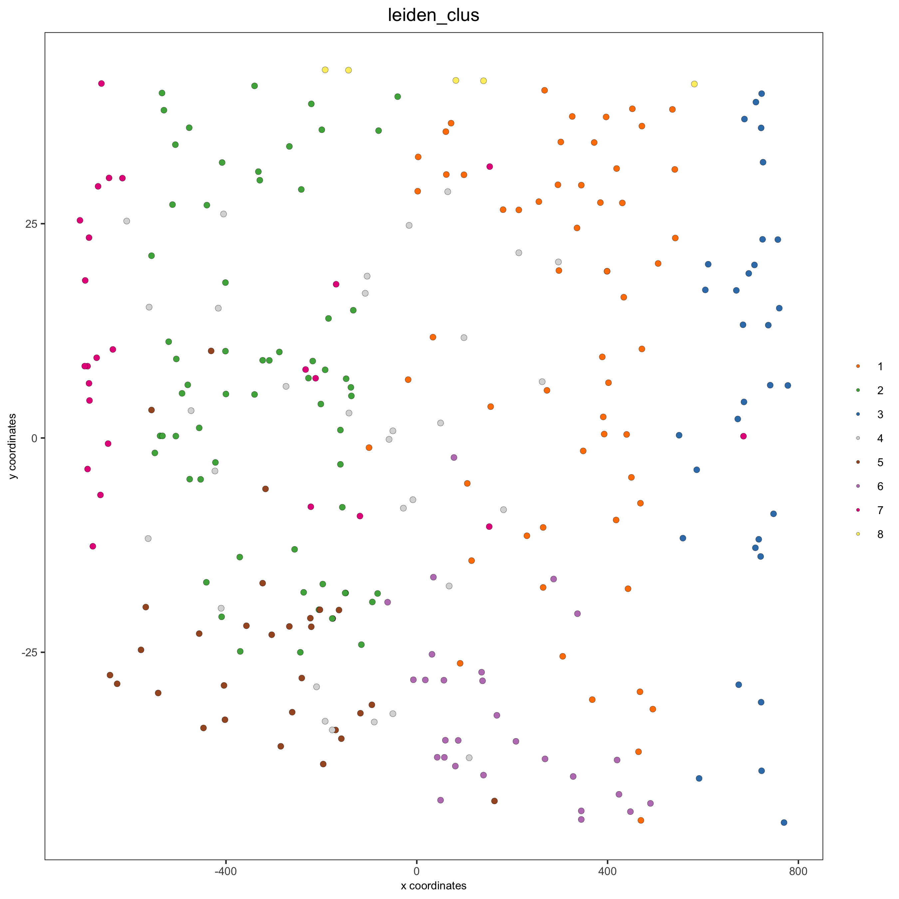
crossSectionPlot3D(starmap_mini,
point_size = 2, cell_color = "leiden_clus",
axis_scale = "cube",
save_param = list(save_name = '13_c_crossplot3D'))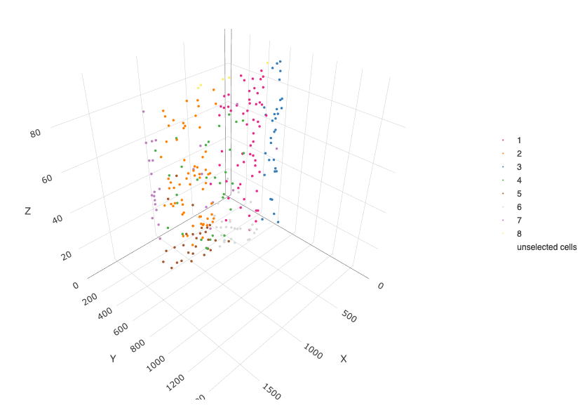
# for gene expression
crossSectionGenePlot(starmap_mini,
genes = "Slc17a7",
point_size = 2,
point_shape = "border",
cow_n_col = 1.5,
expression_values = 'scaled',
save_param = list(save_name = '13_d_crossgeneplot'))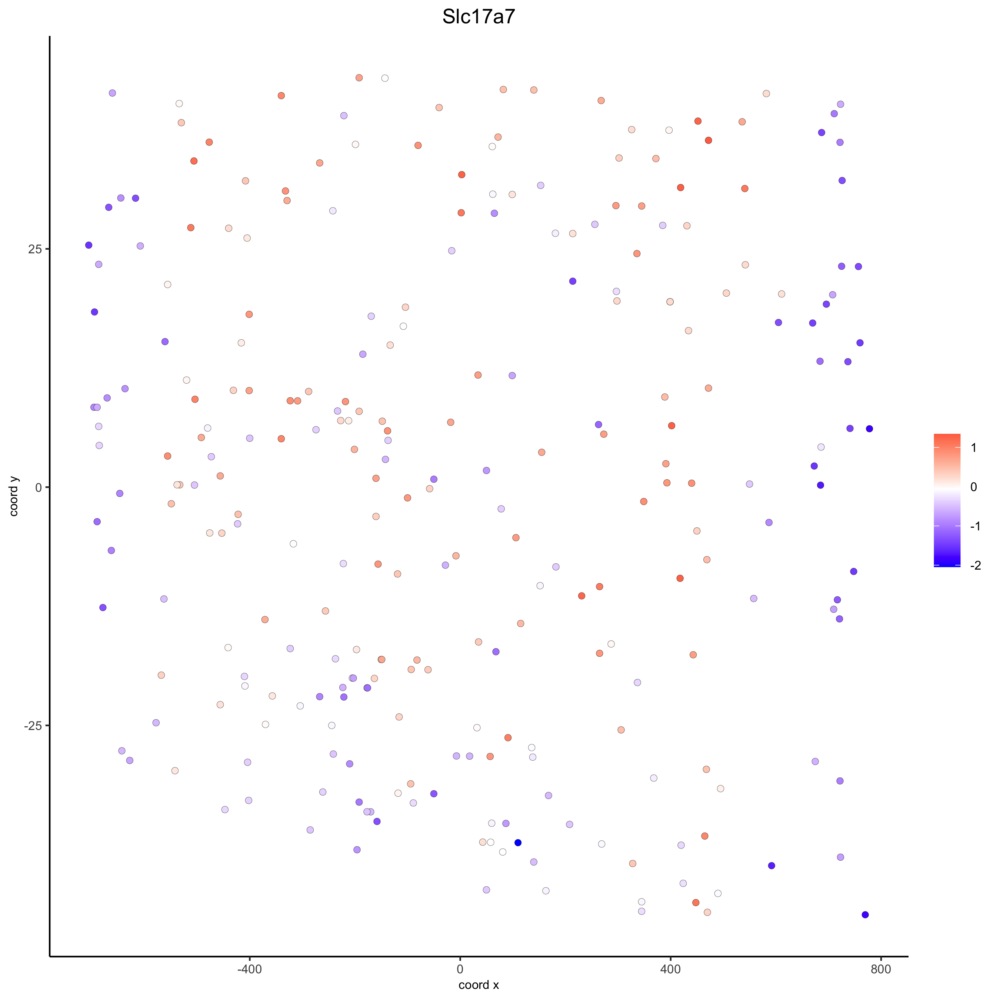
crossSectionGenePlot3D(starmap_mini,
point_size = 2,
genes = c("Slc17a7"),
expression_values = 'scaled',
save_param = list(save_name = '13_e_crossgeneplot3D'))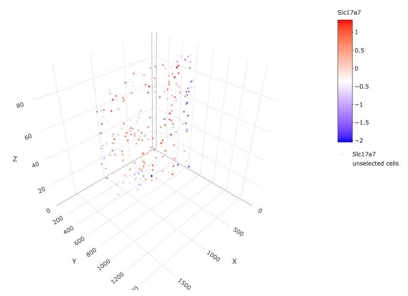
14. export Giotto Analyzer to Viewer
viewer_folder = paste0(temp_dir, '/', 'Mouse_cortex_viewer')
# select annotations, reductions and expression values to view in Giotto Viewer
exportGiottoViewer(gobject = starmap_mini, output_directory = viewer_folder,
factor_annotations = c('cell_types',
'leiden_clus',
'HMRF_k6_b.12'),
numeric_annotations = 'total_expr',
dim_reductions = c('umap'),
dim_reduction_names = c('umap'),
expression_values = 'scaled',
expression_rounding = 3,
overwrite_dir = T)